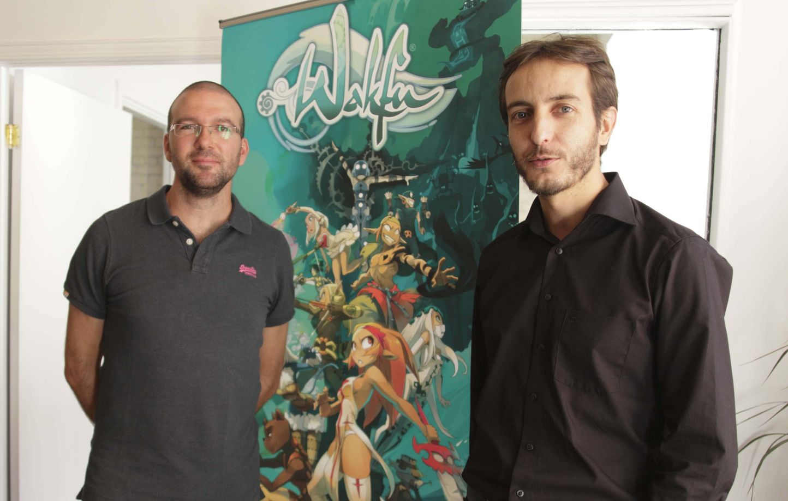
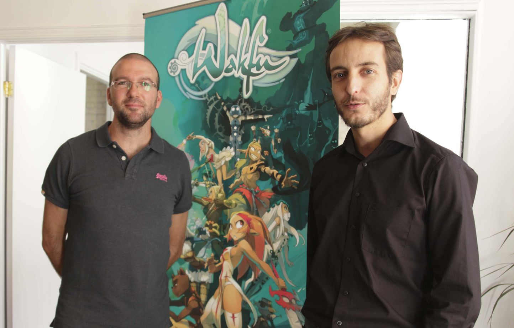

A Propos de Ankama

 

Ankama est une société francaise crée le 15 mai 2001.
Son siège social se situe a Roubaix en France, son activité principal
lors de sa cŕeation était le développement web qui fut lancer par 3 amis,
Camille Chafer, Anthony Roux et Emmanuel Darras. Cela à changer dès
2003 car l'entreprise commenca a crée son premier jeux-vidéo connue sous
le nom de Dofus. Celui-ci est réaliser rapidement (en Flash).
Mais il fallut pas moins d'une année pour qu'il soit distribué.